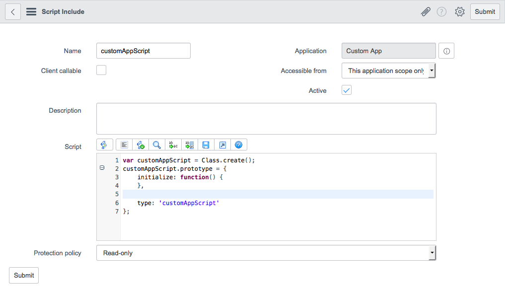
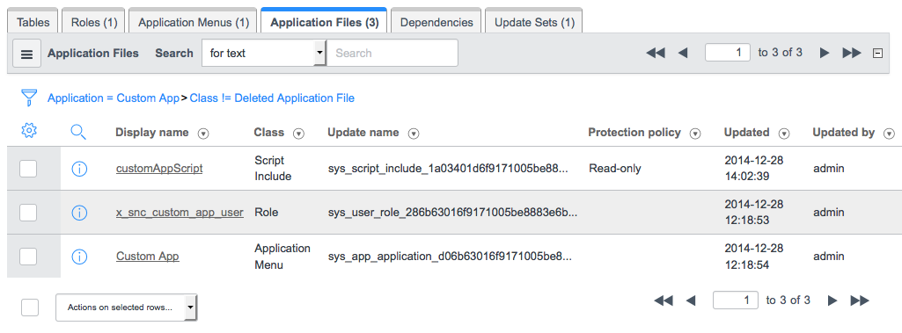

Scripting in Scoped Applications
1 Overview
Building scoped applications allows you to associate your scripts with a specific application, hiding the implementation details and enforcing application independence. Scoped scripting is available starting with the Fuji release.
2 Scripting Basics
The scripting basics apply to all scripts. Additional scripting rules apply to script includes and business rules.
When you create an application as described in Creating Custom Applications the scripts you define are automatically associated with the current application. The script includes, business rules, and other scripts that you create for your application are collected in the Application Files tab of the Custom Application form.
2.1 Application Scope
All scripts must have either a private application scope or global scope. All scripts defined before the Fuji release are assigned the global scope by default. When you create a custom application, the current application scope is the default for any scripts that you define. To create the script within another application, select the application using the application picker.
2.2 Application Namespace
Every custom application has an application scope that is defined by its namespace. The application’s namespace is used as a prefix to all script artifacts. The namespace is automatically generated using your company code [glide.appcreator.company.code] along with a unique sequence to uniquely identify the scope. The namespace consists of a unique organization code, between 2 and 5 characters in length, followed by a short form application ID in the following format:
x_[organization-code]_[app-id]
For example, if the organization code is acm (for Acme Power and Light) and the application ID is power, the following namespace is generated:
x_acm_power
All artifacts—including scripts, tables, and UI pages—in this application scope are prefixed with the x_acm_power prefix—for example, x_acm_power_customer and x_acm_power_vehicle.
3 Script Includes
In addition to the general scripting guidelines, there are additional considerations for defining script includes in scoped applications. For general information on script includes, see Script Includes.
3.1 Public and Private Script Includes
Forms for script includes have an Accessible from field, which defines whether a script is public—that is, available to all applications—or private—available only to the application in which it is defined.
To make a script public, and allow it to be called from other applications, set the Accessible from field on the Script Include form to All application scopes. Use caution when you make a script include public, because any changes to the script include must be done carefully to prevent breaking applications that depend on it.
{kind=link}
To make a script private and inaccessible from other applications, set the Accessible from field to This application scope only. This allows the script to be called only by code within the the defined application scope and prevents code in other application scopes from accessing the script. By setting scripts to private, application developers can easily modify or refactor scripts in future versions since no other applications depend on it.
{kind=link}
The following diagram illustrates the effects of making script includes public and private.
{kind=link}
3.2 Calling Script Includes
The system has a special naming convention policy for calling:
- Any script from the same application scope
- Public scripts from another application scope
- Global scripts from another application scope
3.2.1 Calling a Script from the Same Application Scope
No special prefix is required to call private or public script includes that are defined within the same application. For example, if a script include named LightsAPI is defined within the x_acm_power application, the script include can be called as follows:
var lights = new LightsAPI();
lights.turnOn();
3.2.2 Calling a Public Script from Another Application Scope
A public script include is one where the Accessible from field has been set to All application scopes. When calling across application boundaries, the script must be fully qualified using the namespace to differentiate the script from any other scripts the may have the same name. For example, for another application to invoke the turnOn method of a public script include named LightsAPI in the scope x_acm_power, the call must be fully qualified using the [scope].[API] namespace format. The syntax would be:
var lights = new x_acm_power.LightsAPI();
lights.turnOn();
3.2.3 Calling a Global Script from Another Application Scope
A custom application can also call a global script include that is public. For example, the ArrayUtils script include is in the global scope and must be fully qualified when accessing its functions:
var switches = new global.ArrayUtil();
switches.contains(ary, item);
You must also use a fully qualified namespace to extend objects. For example, AbstractAjaxProcessor must be fully qualified when extending:
var LightsAPI = Class.create();
LightsAPI.prototype = Object.extendsObject(global.AbstractAjaxProcessor, {
type: 'LightsAPI'
});
3.3 Creating a Script Include
To create a script include for an application, the application must be the current application. When you create or open an application, it will remain the current application unless you switch to another application.
To create a script include for a scoped application:
- Navigate to System Definition > Script Includes and click New.
- The Application defaults to the current application.
- Set the form fields. The fields are described in detail on the Script Includes page.
- Set the script visibility:
- All application scopes: The script include will be visible to all application scopes on the instance.
- This application scope only: The script include will be visible only within the current application.
- A script include with application scope
- Click Submit.
- The script include is added to the Application Files tab.
- Script include added to the Application Files tab
{kind=link}
{kind=link}
4 Business Rules
Business rules are configuration records, or application files, you associate with a particular table. To create a business rule the table record for the target table must explicitly allow configuration. When allowed, the table appears as an option from the business rule's Table field. When restricted, the system hides the table from the business rule's list of available tables. By default, most system application tables allow configuration and therefore allow the creation of business rules. Tables from custom applications allow or restrict configuration as set by their application developers. For more information about allowing or restricting configuration, see Application Access Settings.
The types of business rules you can create and how you can access those rules varies depending on the scope of the business rule and the scope of the table it runs on. For more information on creating business rules, including business rules for custom applications, see Business Rules.
5 Scoped System API
Scripts that are part of a private application scope can only access objects defined in the Scoped System API. Scripts in the global scope and scripts created prior to the Fuji release can access any method in the comprehensive system API.